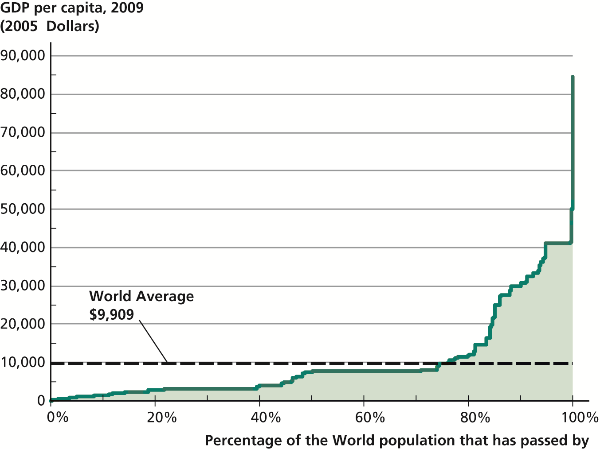
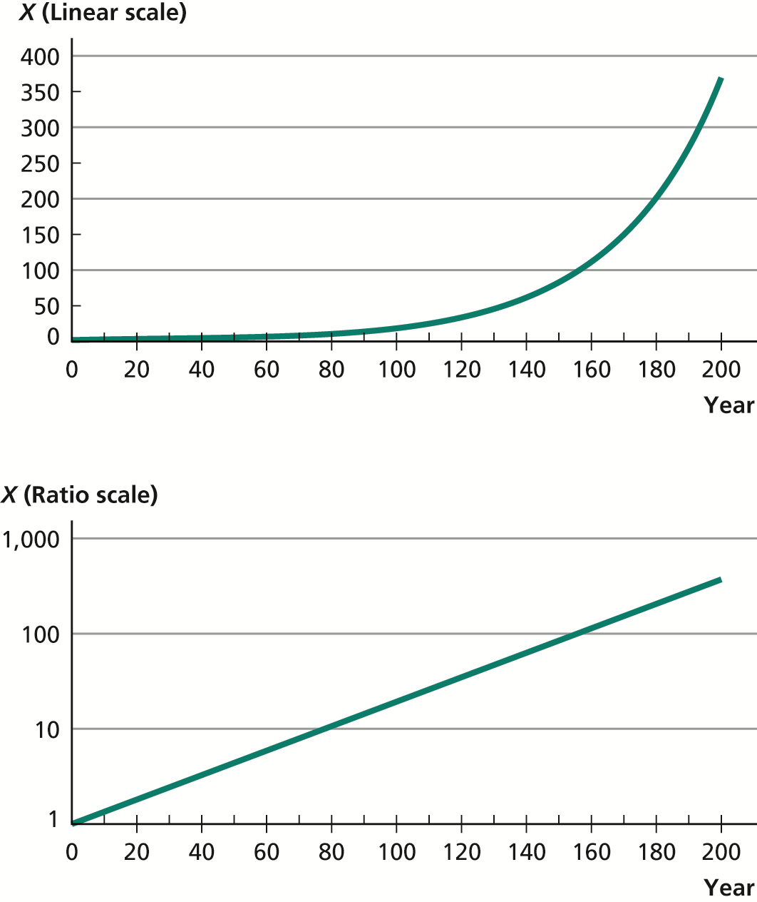
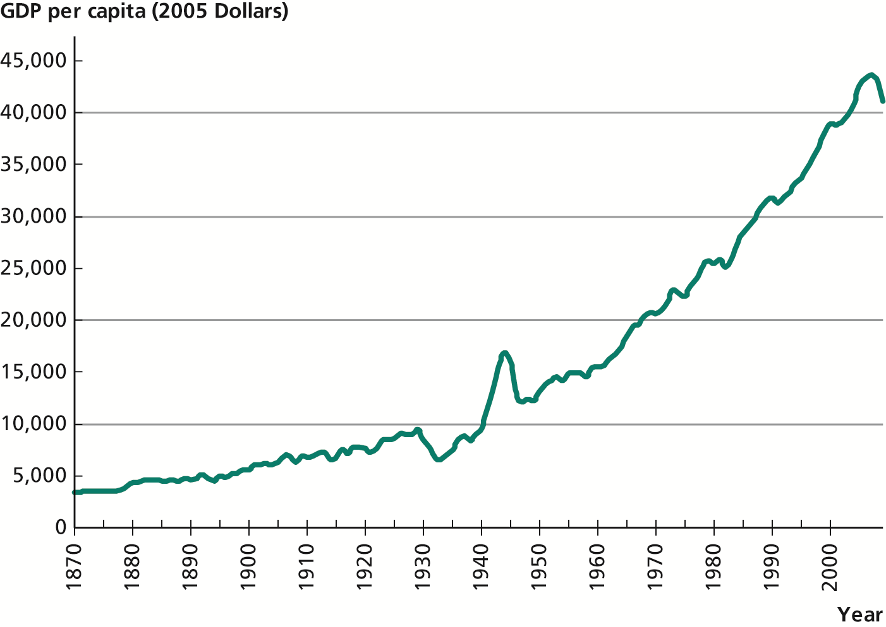
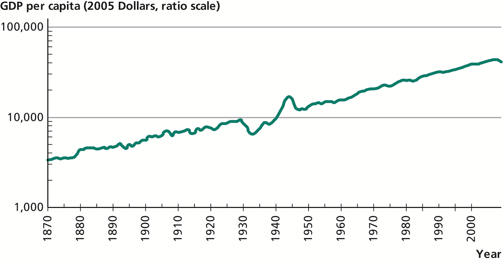
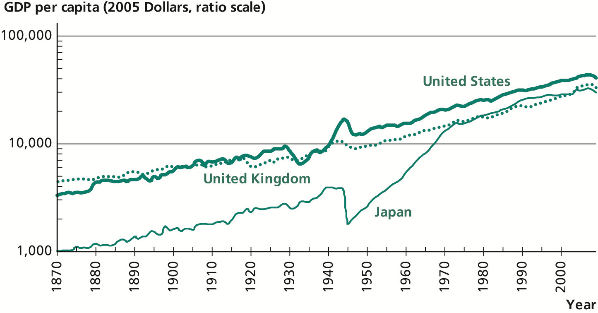
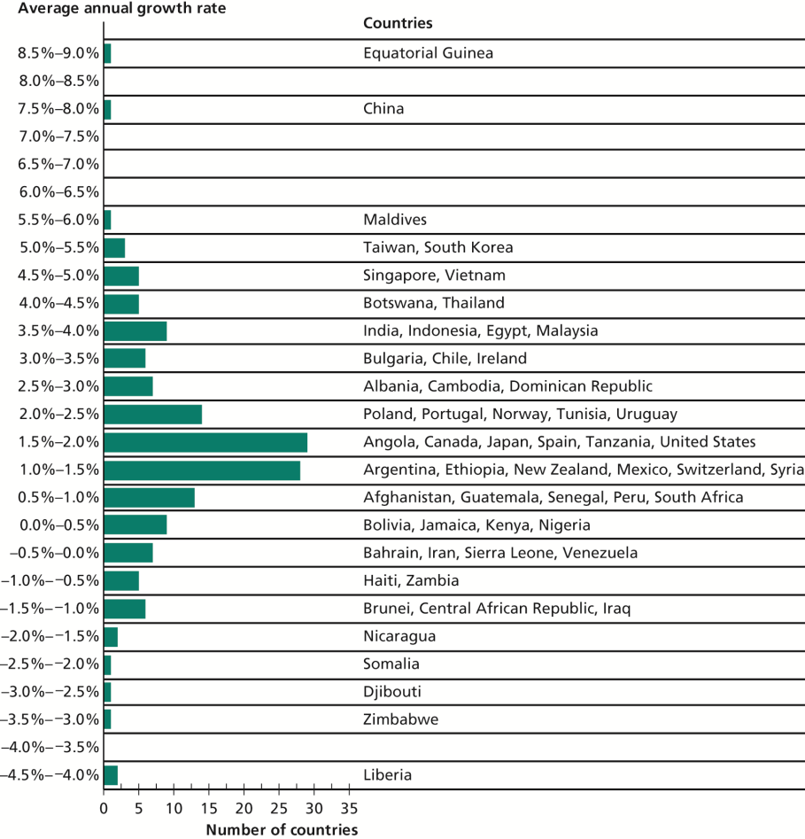
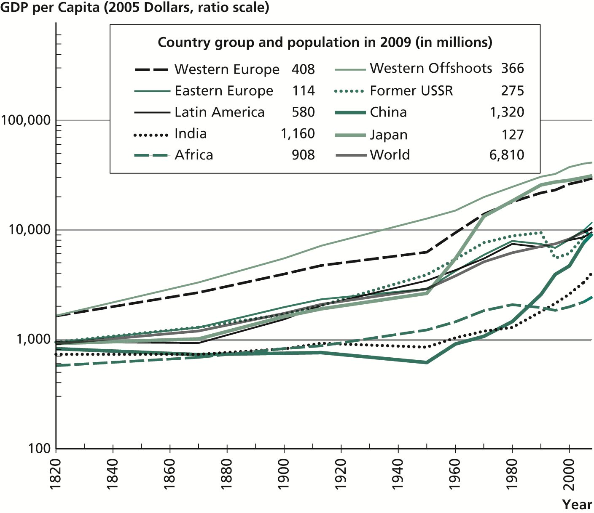
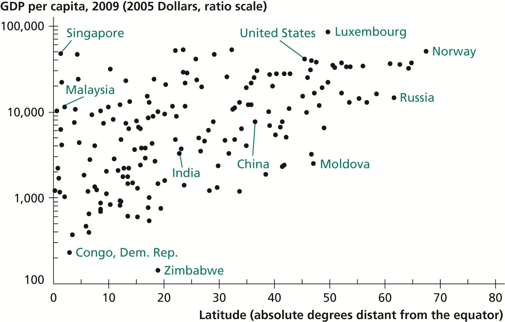
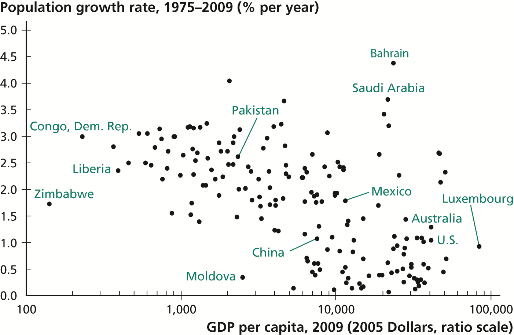

| Homework | 30% |
| Midterm | 30% |
| Final | 40% |
(Subject to change)
| Thursday, April 19 | Homework 1 |
| Thursday, May 3 | Homework 2 |
| Tuesday, May 8 | Midterm |
| Thursday, May 24 | Homework 3 |
| Thursday, June 7 | Homework 4 |
| Tuesday, June 12 | Final exam |









Suppose we find that X and Y are correlated, and we suspect X causes Y. There are three possibilities:
Suppose we want to determine the causal effect of X on Y